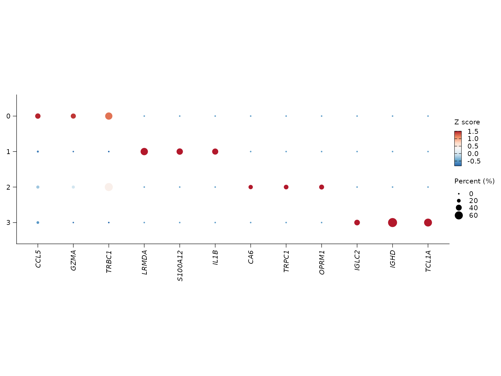

Annotation, markers, and pathways workflow
Songqi Duan
duan@songqi.org Source:vignettes/annotation-pathways.Rmd
annotation-pathways.RmdThis article covers the main biological-interpretation stage after clustering:
- inspect bundled signatures
- score marker structure with differential expression
- visualize top markers
- run ORA or GSEA with
sn_enrich() - optionally bring in reference-based annotation with
sn_run_celltypist()
library(Shennong)
library(dplyr)
library(knitr)
library(Seurat)
if (!exists("pbmc_small", inherits = FALSE)) {
try(data("pbmc_small", package = "Shennong", envir = environment()), silent = TRUE)
}
if (!exists("pbmc_small", inherits = FALSE) && file.exists(file.path("data", "pbmc_small.rda"))) {
load(file.path("data", "pbmc_small.rda"))
}1. Start from bundled signatures
Bundled signatures provide a stable set of marker programs and technical gene sets for filtering, scoring, or interpretation.
| path | n_genes |
|---|---|
| Blocklists/Pseudogenes | 12600 |
| Blocklists/Non-coding | 7783 |
| Programs/HeatShock | 97 |
| Programs/cellCycle.G1S | 42 |
| Programs/cellCycle.G2M | 52 |
| Programs/IFN | 107 |
| Programs/Tcell.cytotoxicity | 3 |
| Programs/Tcell.exhaustion | 5 |
length(stress_genes)
#> [1] 1342. Find marker genes
Cluster markers are usually the first evidence layer for annotation.
knitr::kable(marker_tbl)| p_val | avg_log2FC | pct.1 | pct.2 | p_val_adj | cluster | gene |
|---|---|---|---|---|---|---|
| 8.9e-06 | 5.159201 | 0.330 | 0.101 | 0.4901319 | 0 | NKG7 |
| 7.0e-07 | 5.143783 | 0.352 | 0.092 | 0.0407973 | 0 | CCL5 |
| 1.0e-07 | 4.070451 | 0.330 | 0.046 | 0.0039324 | 0 | GZMA |
| 0.0e+00 | 9.635408 | 0.533 | 0.000 | 0.0000000 | 1 | LRMDA |
| 0.0e+00 | 9.603413 | 0.444 | 0.000 | 0.0000000 | 1 | S100A12 |
| 0.0e+00 | 9.137996 | 0.422 | 0.000 | 0.0000000 | 1 | IL1B |
| 0.0e+00 | 6.317317 | 0.257 | 0.000 | 0.0000017 | 2 | CA6 |
| 0.0e+00 | 6.152965 | 0.286 | 0.000 | 0.0000001 | 2 | TRPC1 |
| 0.0e+00 | 6.144032 | 0.314 | 0.000 | 0.0000000 | 2 | OPRM1 |
| 0.0e+00 | 11.461813 | 0.379 | 0.000 | 0.0000000 | 3 | IGLC2 |
| 0.0e+00 | 10.040121 | 0.690 | 0.000 | 0.0000000 | 3 | IGHD |
| 0.0e+00 | 9.743428 | 0.586 | 0.000 | 0.0000000 | 3 | TCL1A |
3. Visualize top markers
sn_plot_dot() can reuse the stored DE result directly,
which avoids manual gene selection in routine cluster review.
sn_plot_dot(
pbmc_clustered,
features = "top_markers",
de_name = "cluster_markers",
n = 3
)
4. Run pathway analysis
sn_enrich() now supports grouped ORA and ranked GSEA
through the same gene_clusters formula interface. It can
also query multiple databases in one call.
Grouped ORA uses a categorical right-hand side:
ora_result <- sn_enrich(
x = pbmc_clustered,
source_de_name = "cluster_markers",
gene_clusters = gene ~ cluster,
database = c("H", "C2:CP:REACTOME"),
species = "human"
)Ranked GSEA uses a numeric right-hand side:
gsea_result <- sn_enrich(
marker_table,
gene_clusters = gene ~ avg_log2FC,
database = "GOBP",
species = "human"
)5. Optional reference-based annotation
If CellTypist is configured in the local environment, Shennong can add reference labels to the Seurat object:
pbmc_annotated <- sn_run_celltypist(
pbmc_clustered,
model = "Immune_All_Low.pkl"
)That annotation can then be reused as the label input
for downstream integration metrics or cluster summaries.